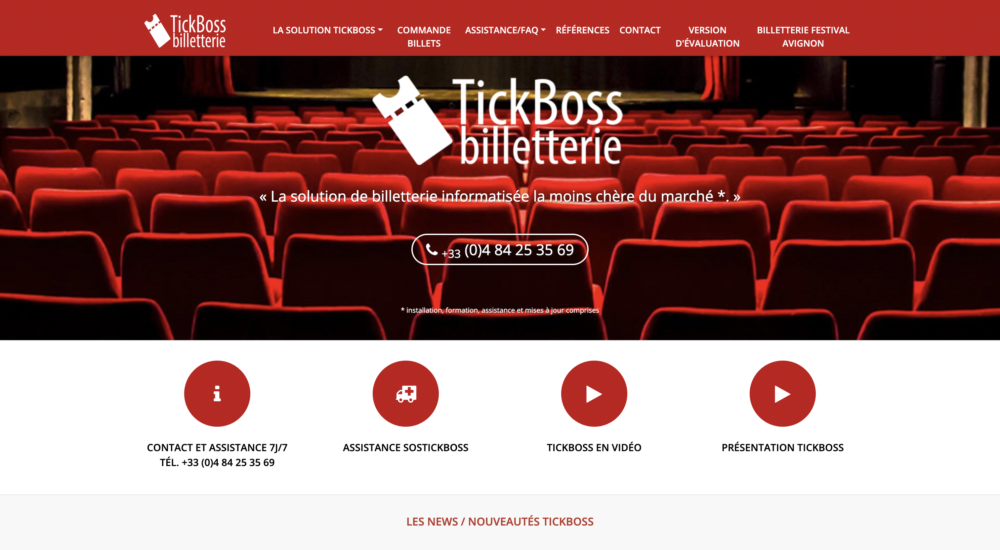
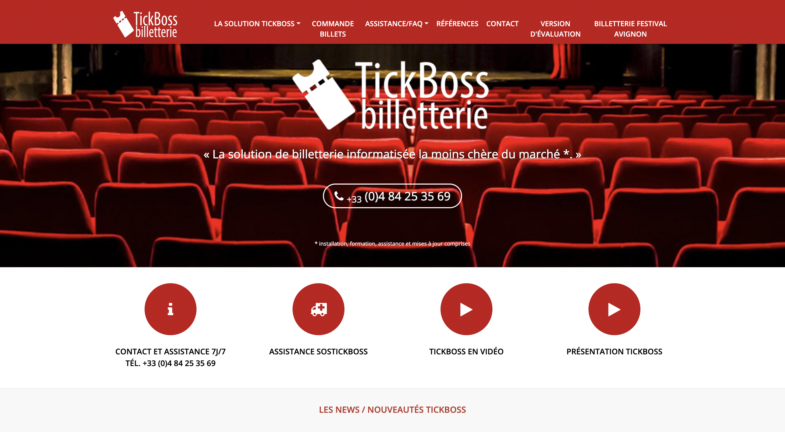

Module d'impression à distance
Ce projet a été réalisé lors de mon stage de deuxième année de BUT Informatique au sein de l'entreprise Art'tick, située à Vedène. L'objectif était de concevoir un module d'impression à distance, destiné à permettre l'impression de billets de spectacle depuis une application web. Ce module, basé sur un Raspberry Pi, devait fonctionner de manière autonome, sécurisée et être facilement déployable chez les clients.
Le système utilise Flask pour l'interface web, CUPS pour la gestion des impressions, et Hangover pour la virtualisation d'un exécutable Windows. Une interface permet de suivre l'état du module (température, IP, état imprimante) et de configurer le Wi-Fi. L'ensemble est livré avec un script d'installation automatique.
Technologies utilisées
- Python (Flask)
- Linux / Raspberry Pi OS Lite
- Shell script
- CUPS (serveur d'impression)
- Hangover (virtualisation)
- HFSQL (base de données)
Compétences mobilisées
- Systèmes embarqués (Raspberry Pi)
- Virtualisation avec Hangover
- Développement backend avec Flask
- Configuration réseau (Hotspot Wi-Fi, IP)
- Autonomie et gestion de projet
- Intégration de services système Linux
- Débogage et optimisation
Rôle personnel
J'ai travaillé seul sur ce projet, en collaboration ponctuelle avec mon tuteur de stage et les développeurs de l'entreprise. J'ai mené toutes les étapes du projet, de l'analyse des besoins jusqu'aux tests finaux. Cette autonomie m'a permis de développer mes compétences en gestion de projet et en résolution de problèmes complexes.
Contexte
Durée : 20 janvier au 3 avril 2025
Entreprise : Art'tick, secteur billetterie
Produit : TickBoss – solution utilisée par plus de 40 % des lieux culturels du Festival d'Avignon
Encadrant : Équipe de développement Art'tick
Trace visuelle
 
